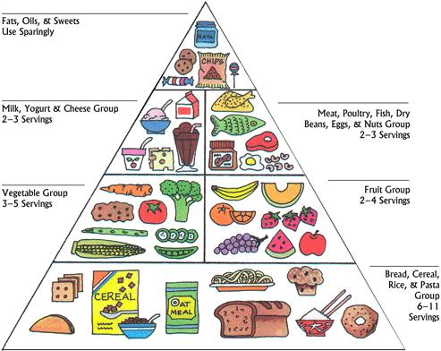

For many of us, finding our favorite food is difficult because the list is long. Food in the United States is plentiful and using different recipes is common place. Hamburgers, hotdogs, french fries, pizza, and sub sandwiches often garnish the plates of many teenagers. However, we need to remember that we should follow the Food Guide Pyramid for eating a healthy diet and increase out chances for a long and productive life.

You will notice from the Pyramid hat there are six major food groups from which to choose:
Please also notice that these are numbered from the ones that you should have the most servings to the ones that should use sparingly.
Eating Healthy on a Budget
Fruit Information
Created by: Columbus Dong, August 2015
e-mail the Web master!
Bck to Top!